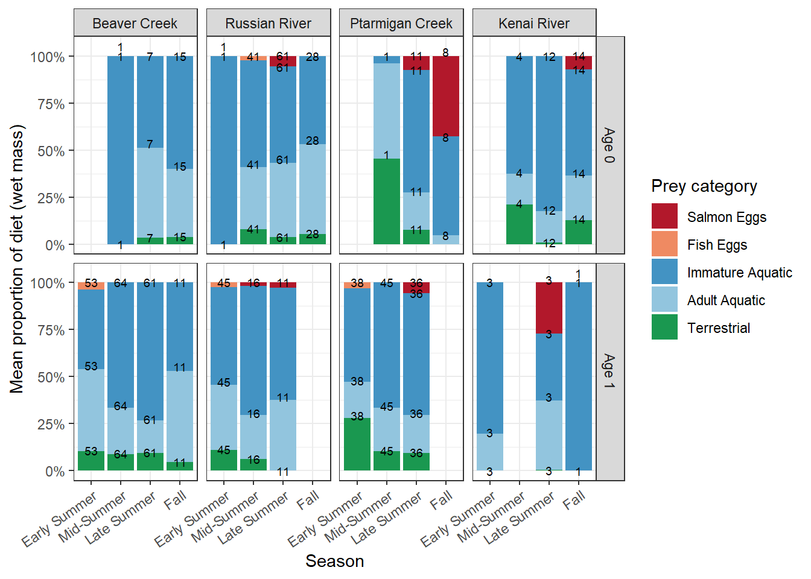
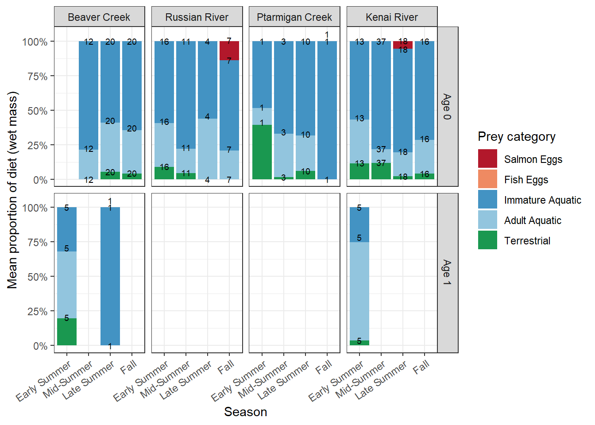
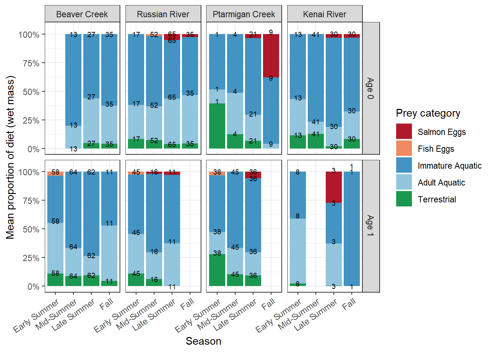

Code
library(tidyverse)
library(readxl)
library(lubridate)
library(anytime)
library(janitor)library(tidyverse)
library(readxl)
library(lubridate)
library(anytime)
library(janitor)This chapter documents the exploration and summary of diet composition data collected via gastric lavage from juvenile Chinook and Coho salmon in the Kenai River watershed during the 2015 and 2016 field seasons. The goals of this chapter are:
We import diet contents data from the two primary field data workbooks. Columns are selected and renamed to a consistent lowercase schema. Both years are combined into a single data frame before any transformations.
The two source files are:
other/inputs/diet_size_other/2015 EPSCoR SCTC.xlsx (sheet: “2015 Diet Contents Data”)other/inputs/diet_size_other/2016_EPSCoR_Aquatic_Ecology_Database.xlsx (sheet: “2016 Diet Contents Data”)Dry mass values in these sheets were estimated from measured prey item lengths using length-weight regressions (W = aL^b), where parameters were drawn from the literature. These calculations were performed within the Excel workbooks using formula-based pipelines. The resulting Total_Prey_Dry_Mass_mg column is our starting point.
SCTC2015 <- "other/inputs/diet_size_other/2015 EPSCoR SCTC.xlsx"
SCTC2016 <- "other/inputs/diet_size_other/2016_EPSCoR_Aquatic_Ecology_Database.xlsx"
diet15 <- read_excel(SCTC2015, sheet = "2015 Diet Contents Data") |>
select(
Sample.ID, Fish_Species, Sample.Event, sample.event.num,
River, Reach, Site, Sample_Date, Prey_Type_Used, PreyCategory,
Quantity, Total_Prey_Dry_Mass_mg
) |>
mutate(
year = "2015",
sample.event.num = as.integer(sample.event.num),
Quantity = as.numeric(Quantity),
Total_Prey_Dry_Mass_mg = as.numeric(Total_Prey_Dry_Mass_mg)
)
diet16 <- read_excel(SCTC2016, sheet = "2016 Diet Contents Data") |>
select(
Sample.ID, Fish_Species, Sample.Event, sample.event.num,
River, Reach, Site, Sample_Date, Prey_Type_Used, PreyCategory,
Quantity, Total_Prey_Dry_Mass_mg
) |>
mutate(
year = "2016",
sample.event.num = as.integer(sample.event.num)
)
diet <- bind_rows(diet15, diet16) |>
rename(
sample.id = Sample.ID,
spp = Fish_Species,
sample.event = Sample.Event,
event.num = sample.event.num,
river = River,
reach = Reach,
site = Site,
date = Sample_Date,
prey = Prey_Type_Used,
preycat_field = PreyCategory,
quantity = Quantity,
dm_mg = Total_Prey_Dry_Mass_mg
) |>
filter(
site != "DR1",
!is.na(spp),
!is.na(sample.event),
!is.na(prey),
!is.na(dm_mg),
!is.na(quantity),
!is.na(event.num)
) |>
mutate(
dm_mg = as.numeric(dm_mg),
sample.event = as.factor(sample.event),
event.num = as.factor(event.num),
date = lubridate::mdy(date),
spp = as.factor(spp),
quantity = as.numeric(quantity),
preycat_field = as.factor(preycat_field),
year = as.factor(year),
season = fct_recode(event.num,
"Early Summer" = "1",
"Mid-Summer" = "2",
"Late Summer" = "3",
"Fall" = "4"),
river = factor(river, levels = c(
"Beaver Creek", "Russian River",
"Ptarmigan Creek", "Kenai River")),
spp = factor(spp, levels = c("Chinook", "Coho"))
)
rm(diet15, diet16)Before calculating proportions, we characterize the dataset. It includes 9,074 identified prey items (by count) from 822 individual fish lavaged, spanning 109 unique prey taxa/lifestage combinations.
diet |>
distinct(sample.id, year, river, spp) |>
count(year, river, spp) |>
arrange(year, river, spp) |>
knitr::kable(caption = "Sample counts by year, river, and species")| year | river | spp | n |
|---|---|---|---|
| 2015 | Beaver Creek | Chinook | 7 |
| 2015 | Beaver Creek | Coho | 115 |
| 2015 | Russian River | Chinook | 9 |
| 2015 | Russian River | Coho | 99 |
| 2015 | Ptarmigan Creek | Chinook | 9 |
| 2015 | Ptarmigan Creek | Coho | 87 |
| 2015 | Kenai River | Chinook | 33 |
| 2015 | Kenai River | Coho | 16 |
| 2016 | Beaver Creek | Chinook | 53 |
| 2016 | Beaver Creek | Coho | 109 |
| 2016 | Russian River | Chinook | 29 |
| 2016 | Russian River | Coho | 112 |
| 2016 | Ptarmigan Creek | Chinook | 12 |
| 2016 | Ptarmigan Creek | Coho | 53 |
| 2016 | Kenai River | Chinook | 57 |
| 2016 | Kenai River | Coho | 22 |
To express prey item mass in wet weight (the required unit for Fish Bioenergetics 4.0 inputs), we apply wet/dry mass ratios from McCarthy et al. 2009 and additional literature sources. These ratios are stored in other/outputs/diet/mass_conversion/prey_types_manual_edit.xlsx.
The general approach:
prey_types sheet of the conversion workbook)data_validation sheet, columns wet_dry_ratio, energy_density_jg, and PreyCategory_ED)wm_mg = dm_mg / wet_dry_ratioNote that the raw PreyCategory field recorded in the source workbooks (retained here as preycat_field) is a field-level classification (origin: terrestrial/aquatic/unknown) and is not the same as the five-category bioenergetics diet-slot scheme used for FB4 inputs (Diet1-5: FishEggs, InvertAquatic_AqOrigin, InvertTerrestrial, InvertTerrestrial_AqOrigin, SalmonEggs). The latter comes from PreyCategory_ED in the conversion workbook, keyed to each prey taxon’s assigned prey_type. All downstream summaries and figures in this chapter use PreyCategory_ED (as preycat), not preycat_field.
dm_convert_prey_types <- read_excel(
"other/outputs/diet/mass_conversion/prey_types_manual_edit.xlsx",
sheet = "prey_types", skip = 1
) |>
select(-notes)
dm_convert_vals <- read_excel(
"other/outputs/diet/mass_conversion/prey_types_manual_edit.xlsx",
sheet = "data_validation"
) |>
filter(!is.na(prey_type))
dm_convert_vals <- left_join(dm_convert_prey_types, dm_convert_vals, by = "prey_type") |>
filter(!is.na(wet_dry_ratio)) |>
select(-notes) |>
rename(prey = unique_diet_prey)
diet <- left_join(diet, dm_convert_vals, by = "prey") |>
filter(!is.na(wet_dry_ratio)) |>
mutate(
wm_mg = dm_mg / wet_dry_ratio,
preycat = factor(PreyCategory_ED, levels = c(
"SalmonEggs", "FishEggs",
"InvertAquatic_AqOrigin", "InvertTerrestrial_AqOrigin",
"InvertTerrestrial"
))
)We join fish length, weight, and age data to the diet records so that we can disaggregate diet summaries by age class and examine size-related patterns.
fish_ages15 <- read_excel(SCTC2015, sheet = "C 2015 Diet & LW Data") |>
select(
river, sample.id, sample.event, spp,
Weight_g, Length_mm, Age_manual2, sample.event.num,
`Date...41`, `Site ID`, reach_name
) |>
rename(
wt_g = Weight_g, len_mm = Length_mm,
age = Age_manual2,
date_fish = `Date...41`
) |>
mutate(
date_fish = anytime::anydate(date_fish),
wt_g = as.double(wt_g),
year = "2015"
) |>
filter(spp %in% c("Coho", "Chinook"))
fish_ages16 <- read_excel(SCTC2016, sheet = "C 2016 Diet & LW Data") |>
select(
river, sample.id, sample.event, spp,
Weight_g, Length_mm, Age_manual2, sample.event.num,
Date, `Site ID`, reach_name
) |>
rename(
wt_g = Weight_g, len_mm = Length_mm,
age = Age_manual2,
date_fish = Date
) |>
mutate(
date_fish = anytime::anydate(date_fish),
wt_g = as.numeric(wt_g),
year = "2016"
) |>
filter(spp %in% c("Coho", "Chinook"))
fish_ages <- bind_rows(fish_ages15, fish_ages16) |>
mutate(
spp = factor(spp, levels = c("Chinook", "Coho")),
year = as.factor(year),
age = as.integer(age)
) |>
filter(!is.na(age), age %in% c(0, 1))
rm(fish_ages15, fish_ages16)
# Join age and size to diet data
diet <- left_join(diet, fish_ages |> select(sample.id, wt_g, len_mm, age),
by = "sample.id") |>
filter(!is.na(age))We calculate the proportion of total wet mass contributed by each prey category, at multiple levels of grouping. Results at the fish level (per-fish proportions) are used for summaries; grouped proportions (pooled across fish within a group) are used as bioenergetics model inputs (Chapter 4).
A fish that did not eat a given prey category has no row for that category, not an explicit zero. If left that way, a later group-level average of prop_wm (e.g., mean proportion of salmon eggs in a river/season/species/age group) would be computed only over the fish that did eat that category, rather than over all fish in the group. Category means computed this way do not share a common denominator, and can sum to well over 100% when stacked. We fix this by completing each fish’s record with explicit zero-mass rows for every prey category it did not eat, so every fish contributes to every category’s denominator downstream.
# Per-fish wet mass by prey bioenergetics category
diet_per_fish <- diet |>
group_by(sample.id, spp, age, year, river, season, preycat) |>
summarise(wm_mg = sum(wm_mg, na.rm = TRUE), .groups = "drop") |>
# Explicit zeros for uneaten categories; see note above
complete(nesting(sample.id, spp, age, year, river, season), preycat, fill = list(wm_mg = 0))
# Per-fish total wet mass (denominator)
fish_totals <- diet_per_fish |>
group_by(sample.id) |>
summarise(total_wm_mg = sum(wm_mg), .groups = "drop")
# Per-fish proportions
diet_props <- left_join(diet_per_fish, fish_totals, by = "sample.id") |>
mutate(prop_wm = wm_mg / total_wm_mg)The primary visualization is a stacked bar chart of mean wet-mass proportions, faceted by river (column) and age class (row), with season on the x-axis. We present this three ways: Coho only, Chinook only, and with both species’ diet content pooled together, since cross-species comparison is not the focus of this deliverable and faceting by species as well made facet strip labels illegible. Age classes remain separate in all three. See the literature review chapter for context on this presentation format.
preycat_labels <- c(
SalmonEggs = "Salmon Eggs",
FishEggs = "Fish Eggs",
InvertAquatic_AqOrigin = "Immature Aquatic",
InvertTerrestrial_AqOrigin = "Adult Aquatic",
InvertTerrestrial = "Terrestrial"
)
preycat_colors <- c(
SalmonEggs = "#b2182b",
FishEggs = "#ef8a62",
InvertAquatic_AqOrigin = "#4393c3",
InvertTerrestrial_AqOrigin = "#92c5de",
InvertTerrestrial = "#1a9850"
)
# Shared summary + plotting helpers for the three diet composition figures below
summarise_diet <- function(data) {
data |>
group_by(river, season, age, preycat) |>
summarise(
mean_prop = mean(prop_wm, na.rm = TRUE),
n_fish = n_distinct(sample.id),
.groups = "drop"
) |>
mutate(
season = factor(season, levels = c(
"Early Summer", "Mid-Summer", "Late Summer", "Fall")),
age_label = paste0("Age ", age)
)
}
plot_diet_bars <- function(data) {
ggplot(data, aes(x = season, y = mean_prop, fill = preycat)) +
geom_col(position = "stack") +
geom_text(
aes(label = n_fish, group = preycat),
stat = "summary", fun = sum,
position = position_stack(vjust = 1.05),
size = 2.5, check_overlap = TRUE
) +
facet_grid(age_label ~ river) +
scale_y_continuous(labels = scales::percent_format()) +
scale_fill_manual(values = preycat_colors, labels = preycat_labels) +
labs(
x = "Season",
y = "Mean proportion of diet (wet mass)",
fill = "Prey category"
) +
theme_bw() +
theme(axis.text.x = element_text(angle = 35, hjust = 1))
}diet_summary_coho <- diet_props |>
filter(spp == "Coho") |>
summarise_diet()
plot_diet_bars(diet_summary_coho)
diet_summary_chinook <- diet_props |>
filter(spp == "Chinook") |>
summarise_diet()
plot_diet_bars(diet_summary_chinook)
Diet content from Coho and Chinook is pooled within each river/season/age group (species is dropped from the grouping, not averaged across it, so every fish contributes individually to the combined denominator).
diet_summary_combined <- diet_props |>
summarise_diet()
plot_diet_bars(diet_summary_combined)
We collapse prey categories into three coarse groups (terrestrial, freshwater-aquatic, marine/salmon-derived) to facilitate comparison with external literature.
subsidy_map <- tibble(
preycat = c(
"InvertTerrestrial", "InvertTerrestrial_AqOrigin",
"InvertAquatic_AqOrigin",
"FishEggs", "SalmonEggs"
),
subsidy_class = c(
"Terrestrial", "Terrestrial (aquatic origin)",
"Freshwater-aquatic",
"Marine/salmon-derived", "Marine/salmon-derived"
)
)
diet_subsidy <- diet_props |>
left_join(subsidy_map, by = "preycat") |>
group_by(sample.id, spp, age, year, river, season, subsidy_class) |>
summarise(prop_wm = sum(prop_wm, na.rm = TRUE), .groups = "drop")diet |>
distinct(sample.id, spp, age, river, year) |>
count( river, spp, age, year, name = "n_fish") |>
arrange(river, year ,spp, age) |>
knitr::kable(caption = "Sample sizes by river, species, year, and age")| river | spp | age | year | n_fish |
|---|---|---|---|---|
| Beaver Creek | Chinook | 0 | 2015 | 1 |
| Beaver Creek | Chinook | 1 | 2015 | 6 |
| Beaver Creek | Coho | 0 | 2015 | 1 |
| Beaver Creek | Coho | 1 | 2015 | 105 |
| Beaver Creek | Chinook | 0 | 2016 | 51 |
| Beaver Creek | Coho | 0 | 2016 | 22 |
| Beaver Creek | Coho | 1 | 2016 | 84 |
| Russian River | Chinook | 0 | 2015 | 9 |
| Russian River | Coho | 0 | 2015 | 65 |
| Russian River | Coho | 1 | 2015 | 31 |
| Russian River | Chinook | 0 | 2016 | 29 |
| Russian River | Coho | 0 | 2016 | 66 |
| Russian River | Coho | 1 | 2016 | 41 |
| Ptarmigan Creek | Chinook | 0 | 2015 | 3 |
| Ptarmigan Creek | Coho | 0 | 2015 | 6 |
| Ptarmigan Creek | Coho | 1 | 2015 | 81 |
| Ptarmigan Creek | Chinook | 0 | 2016 | 12 |
| Ptarmigan Creek | Coho | 0 | 2016 | 14 |
| Ptarmigan Creek | Coho | 1 | 2016 | 38 |
| Kenai River | Chinook | 0 | 2015 | 32 |
| Kenai River | Coho | 0 | 2015 | 14 |
| Kenai River | Coho | 1 | 2015 | 2 |
| Kenai River | Chinook | 0 | 2016 | 52 |
| Kenai River | Chinook | 1 | 2016 | 5 |
| Kenai River | Coho | 0 | 2016 | 16 |
| Kenai River | Coho | 1 | 2016 | 5 |
Bait, Bait EGGS, Empty/EMPTY, and 0 (empty-stomach or bait-contamination codes), which have no conversion-table match and are dropped naturally at that step.preycat field used throughout this chapter is the bioenergetics diet-slot classification (PreyCategory_ED) from the conversion workbook, not the raw field-recorded PreyCategory column (kept as preycat_field); the two classification schemes disagree for some taxa (e.g., oligochaetes), and only PreyCategory_ED is used for FB4 diet-slot inputs.